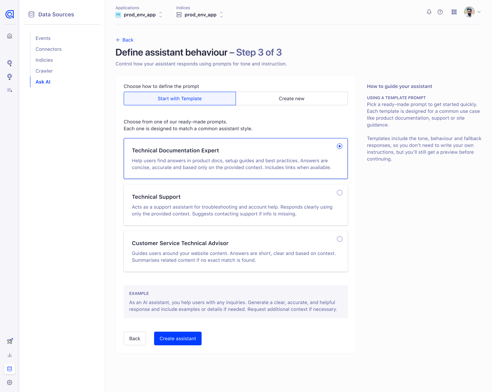
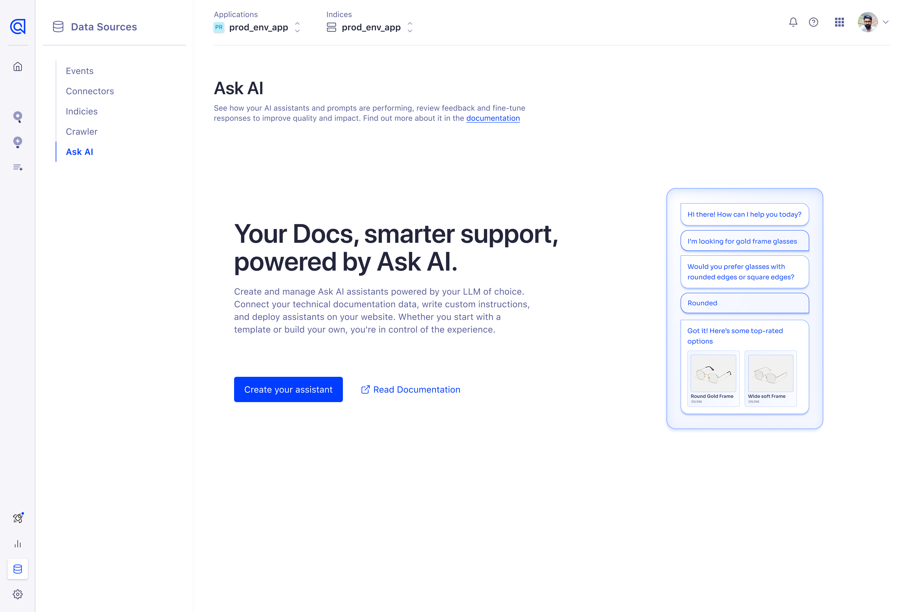
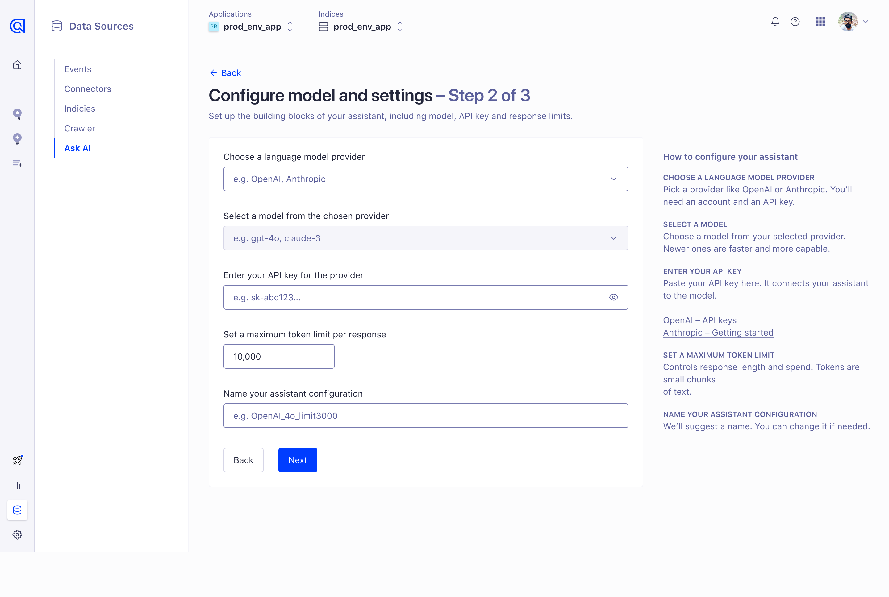
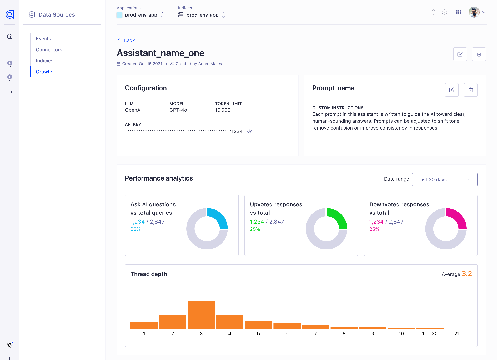
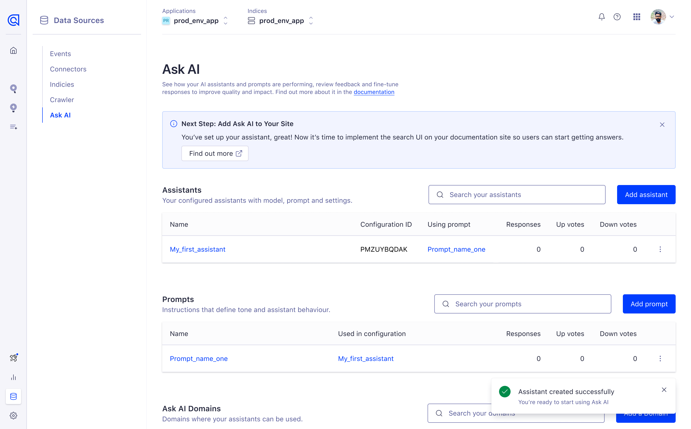

Algolia · 2025 · Design lead · Ask AI inside DocSearch
The fast path was a setup split between code and the dashboard. I argued for a guided one inside the product.
Ask AI is the assistant inside DocSearch, Algolia's search for documentation sites. It answers a reader's question from the docs instead of listing pages. The teams who run those docs set it up.
I led the design of a guided onboarding model that kept configuration inside the product and presented the assistant and its analytics as one experience.
In the first 30 days the flow drove 86 completed assistant setups at a 26.7% completion rate, with zero support tickets tied to configuration errors. The patterns went on to shape onboarding in Agent Studio.
The principal move was recognising that speed was the wrong target before anything was built and moving the team to solve for product coherence instead.
Ask AI is live today. See it at algolia.com.
Ask AI launched inside DocSearch at a time when AI features were quickly becoming table stakes. The pressure was to move fast and keep pace with competitors, but the most likely outcome was a minimal setup split between code and the Algolia UI.
I led the design of a guided onboarding model that kept configuration inside the product, reduced friction during setup and created a more scalable foundation for future AI experiences. In the first 30 days, the flow drove 86 completed assistant setups, a 26.7% completion rate and zero support tickets tied to configuration errors. It also went on to influence broader onboarding patterns in Agent Studio.
Ask AI was introduced as part of DocSearch to help Algolia keep pace as competing products started shipping AI features. The immediate business pressure was simple. Move quickly and stay relevant.
But speed alone was not the real challenge.
The bigger risk was shipping an experience that only worked if users were willing to stitch setup together across multiple places. The early direction leaned toward a thin implementation, with some configuration handled in the UI and other parts pushed into code. That may have been faster to release, but it would also have created a fragmented workflow, made setup harder to follow and limited the product's ability to stand on its own inside the platform.
I believed the real problem was not how to expose the functionality quickly. It was how to make Ask AI usable as a product, not just available as technical capability.
On the surface, this looked like an onboarding problem.
In reality, it was a product coherence problem.
Without intervention, Ask AI would likely have launched as a minimal interface with key parts of setup split between the codebase and the product UI. That would have pushed more of the burden onto users, created a disjointed experience and made configuration harder to understand and complete.
I reframed the work around jobs to be done. Instead of asking "What is the fastest way to expose this feature?", I pushed the team to ask "What is the clearest and most coherent way to help someone configure this successfully inside the product?"
That shift mattered. It changed the conversation from implementation speed to adoption risk. It changed the shape of the solution.
I did not invent Ask AI as a product concept. My role was to define how users would configure and experience it inside the product.
I owned the onboarding model, the sequence of setup decisions, the way the agent was presented to users and how analytics were surfaced after setup. I also worked to remove the split between code-based and in-product configuration, so the feature felt cohesive rather than stitched together.
My scope covered six areas.
This was not just interface design. It was a product direction decision about how Ask AI should work, who it could realistically serve and how much burden the product placed on the user.
This was not a neat project with a settled plan.
There was pressure to ship quickly, the wider strategy was still moving and the upgrade path beyond the MVP had not been thought through clearly enough. At the same time, there was a long-standing belief from engineering and wider leadership that developer products should optimise for speed first and that richer UI often got in the way.
That created a real tension.
One path prioritised speed of implementation. It would have shipped faster, but at the cost of a fragmented experience and a narrower product. The other path required more design discipline and stronger alignment, but had a better chance of producing something coherent and scalable.
I had to navigate that tension while working lean, often keeping pace with features that were already moving toward code. Part of the challenge was not just defining the right experience. It was keeping the product coherent while the team was shipping in motion.
The most important contribution I made was changing the setup model. Without my involvement, Ask AI would likely have launched as a much more minimal experience, with functionality split between code and the Algolia platform.
I challenged that direction and pushed for a guided, in-product setup flow that kept users in one place and focused them on one decision at a time. For the first version, I prioritised simplicity and speed to value over maximum flexibility. We used opinionated defaults, reduced distractions and structured the experience as a step-by-step wizard.
Outcome.
That choice was not about making the UI feel friendlier. It was about reducing the burden of configuration and turning a complex capability into a usable product experience.

I removed the need for users to bounce between code and the UI during configuration. This made setup feel more cohesive and gave the feature a clearer product shape.
Outcome.
The experience became something users could complete entirely inside the platform, rather than a partial UI backed by code they had to manage separately.


My scope included how the configured assistant and its analytics were presented after setup. That mattered because the product needed to feel coherent beyond onboarding, not like a collection of disconnected screens.
Outcome.
The result was a more legible product experience from setup through to use, rather than a handoff between separate surfaces.

This work required more than producing screens.
I had to challenge a default product assumption. That speed of implementation was the primary success metric. I used jobs to be done framing to shift the conversation toward user burden, product coherence and adoption risk. That framing gave PMs a stronger way to align leadership and helped move the team away from a thinner, more fragmented setup model.
The influence extended beyond the initial design review. PMs used the framing to align leadership. Engineers reused the architecture. Other designers adopted the onboarding model.
That mattered because it meant the work created leverage beyond the original feature, rather than staying trapped as a one-off solution.
Strategic outcome.
The value was not just in getting a flow out of the door. It was in changing the shape of the product and giving the organisation a stronger pattern for similar work.
In the first 30 days, Ask AI reached three marks.

The strongest signal for me was not just the number of completions. It was the absence of configuration-related support tickets. That suggests the guided setup reduced confusion rather than adding friction, which was important given the concern that a richer flow might slow users down.
Product.
PMs used the framing to align leadership on scope and direction. The product coherence argument replaced implementation speed as the primary decision criterion.
Engineering.
Engineers reused the architecture established during this work, reducing rework on adjacent features.
Design.
Other designers adopted the onboarding model. The patterns from Ask AI later informed the revamp of Agent Studio.
Organisational.
The approach created a reusable pattern for AI configuration onboarding that extended well beyond the original feature launch.
I can credibly say this work improved product coherence, created a guided onboarding model that performed well and influenced future AI onboarding patterns inside Algolia. I cannot credibly claim direct revenue impact, support cost savings or proven adoption by non-technical personas from the evidence I have today, so I do not. That honesty makes the story stronger, not weaker.
The principal signal in this work is not that I designed a wizard.
It is that I identified that the default delivery path solved the wrong problem. The obvious path was to ship fast and expose the capability. I pushed the team to solve for product coherence and adoption instead. That changed the setup model, shaped what shipped, influenced how stakeholders thought about the problem and created a reusable pattern that later informed Agent Studio.
This project shows five things I can do.
The outcome was not just a better onboarding flow. It was a stronger product model and a more scalable approach to AI configuration.
Looking back, the most important lesson was that in fast-moving spaces like AI, the first risk is not always shipping too slowly. Sometimes the bigger risk is shipping something technically possible but structurally hard to adopt.
Ask AI reinforced for me that design has the most leverage when it shapes the product model early, not just the interface late. By changing the setup from a fragmented implementation pattern into a guided in-product experience, I helped turn a feature into something that could behave more like a product.
It also showed how much value comes from creating work that others can reuse. The fact that this approach influenced Agent Studio and was adopted more broadly by PMs, engineers and other designers, is what makes the story meaningful beyond the original launch.
The principal move. Recognising that speed was the wrong target before anything was built and moving the team to solve for product coherence instead.
→ Full story and decisions in an interview